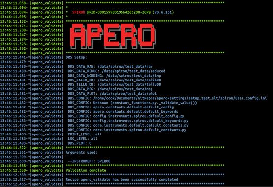

The validation recipe confirms that the configuration settings entered during the installation process (or updated manually in the files afterwards) are correct to at least setup APERO.
As part of the validation recipe constants are print to the screen, similarly to when any recipe-run is started.
startup splash¶
The configuration values printed are as follows:
The Instrument, PID and current version of APERO
DRS_DATA_RAW: the raw directory
DRS_DATA_REDUC: the reduced data directory
DRS_DATA_WORKING: the preprocessed data directory
DRS_CONFIG: a list of places parameters and constants are taken from (ordered in decending priority
DATABASE: The database type (MYSQL or SQLITE3)
DATABASE-CALIB: the address of the calibration database table
DATABASE-TELLU: the address of the telluric database table
DATABASE-INDEX: the address of the index database table
DATABASE-LOG: the address of the log database table
DATABASE-OBJECT: the address of the object database table
DATABASE-LANG: the address of the language database table
DRS_PRINT_LEVEL: the standard output (console) level of logging
DRS_LOG_LEVEL: the log file level of logging
DRS_PLOT: the plotting mode (0, 1 or 2)
The splash screen should look similar to this:
